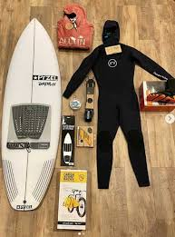

Les surfeurs rebelles:
Le surf c'est quoi ?
Le surf est un sport en pleine air qui se pratique toute l'année. Il permet d'acquérir un bon sens marin et apporte de réels bienfaits pour la santé physique et morale.
Le surf consiste a glisser sur les vagues, debout sur une planche.
Ce sport se pratique sur les côtes bordant des océans, c'est un sport a risque pour les professionnels.

Quel sont les risques de se sport ?
- Les animaux marins: méduses, oursins, etc.
- Les collisions entre surfeurs, rochers, coraux, baigneurs...
- Les coups de soleil
Aventure, découverte, passion, sport ...

Océan

Avoir les bons equipement est important !

Le surf est un sport exaltant qui nécessite un équipement unique pour profiter au maximum de votre temps sur les vagues. Que vous soyez complètement novice ou que vous cherchiez à améliorer votre équipement, comprendre les éléments essentiels du matériel de surf est crucial.
- Une planche qui vous convient.
- leashes et corde de jambe pour garder votre planche attacher.
- Une combinaison qui permet de rester au chaud et alaise dans l'eau.
- Des palmes qui serta améliorer le controle et la performance.
- Protection solaire.
Ou acheter son matériel de surf ?
Vous pouvez trouver du matériel de surf dans les magasins de surf locaux, les magasins spécialisés et les détaillants en ligne. Il est essentiel d'essayer les combinaisons et de manipuler les planches en personne avant de les acheter pour garantir un ajustement et une qualité adaptés.
Quels sont les dangers du surf ?
Les surfeurs sont confrontés à des dangers que même les meilleurs ne peuvent pas vraiment éviter. L’attaque de requin constitue l’un des dangers les plus redoutés des surfeurs. Les requins que les surfeurs rencontrent peuvent être extrêmement dangereux. Dans la majorité des cas, les attaques de requins sont mortelles pour les surfeurs.
Un des accidents très fréquent chez les surfeurs, c’est lorsqu’un surfeur entre en collision avec sa propre planche de surf ce qui pourrait entrainer:
- Des traumatismes crâniens, porter un casque pourrait vous sauvez la vie en cas de grave accidents
- Des blessurs ouverte, pour éviter c'est blessures nous vous consseillons de vous jetez le plus loin possible de votre planche quand vous tombez.
il y a d'autre type de blessures qui est fréquenment causer par l'environnement du surfeur.
Quels sont les bienfaits du surf ?
Le surf de nombreux bienfaits notamment:
- Une sensation de liberté
- L'apprentissage de la persévérance et du dépassement de soi.
- L'aide à l'évacuation du stress et des tensions.
- Le sculptage et le tonification harmonieux du corps, ainsi que l'aide à la perte de poids.
- Une meilleiur endurance, renforcement musculaire, une meilleur posture, une dimunition des risques de maladie chronique...